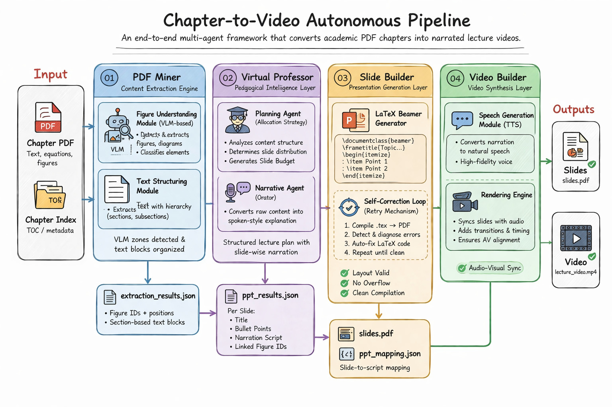
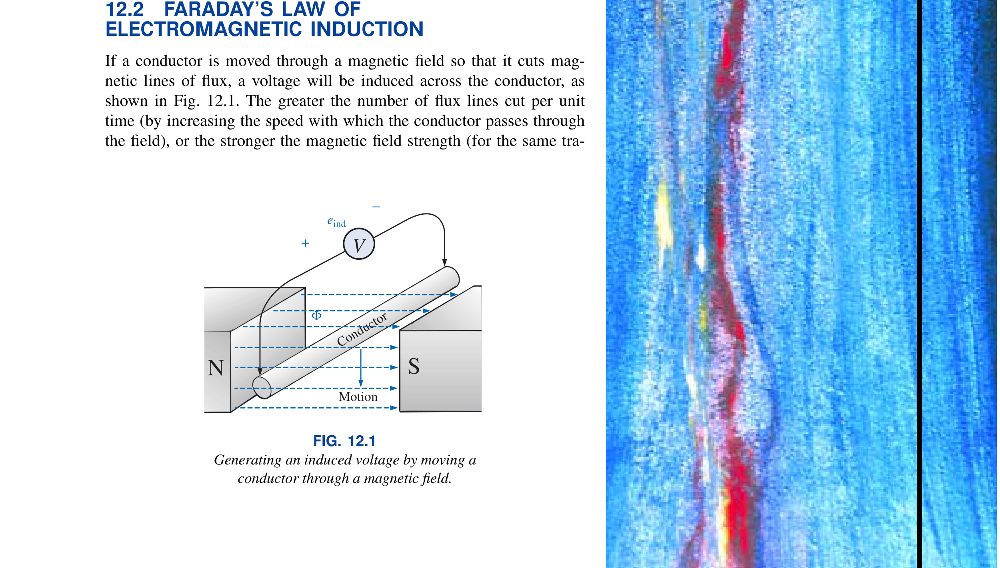
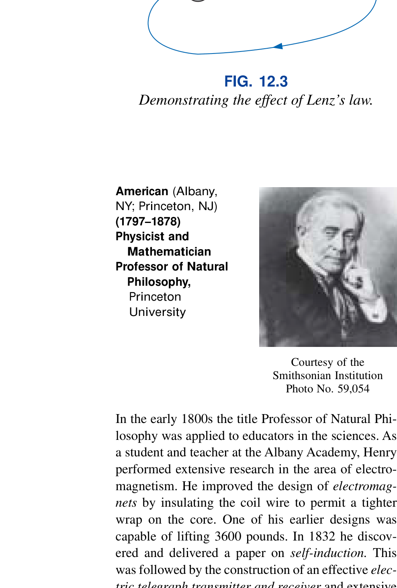
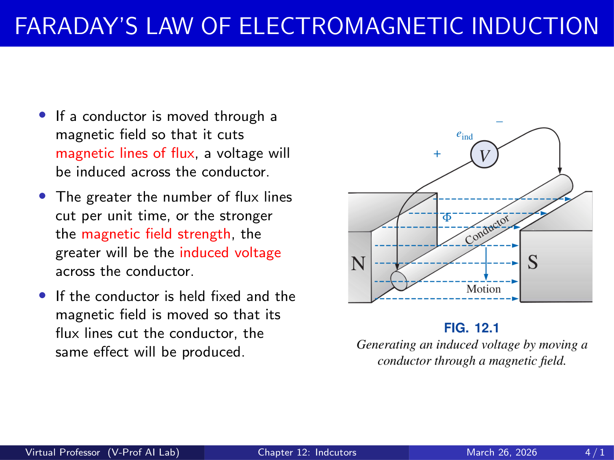
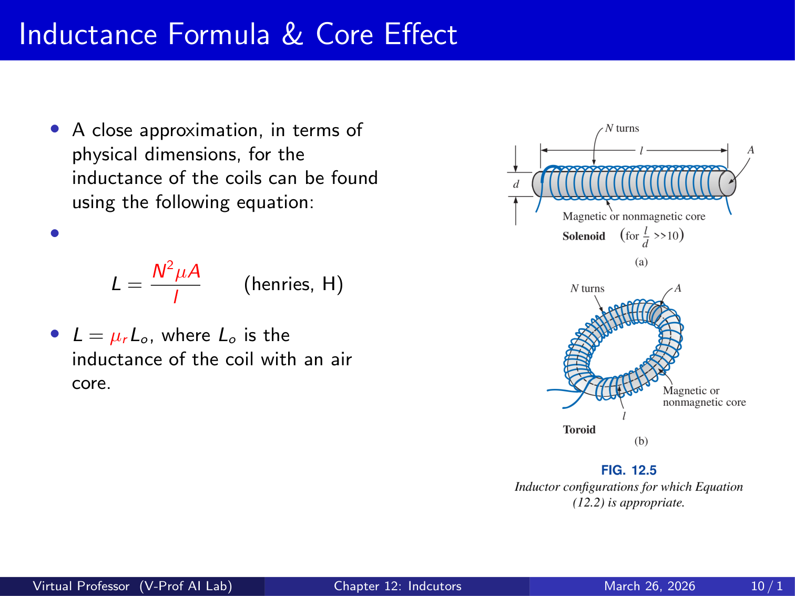
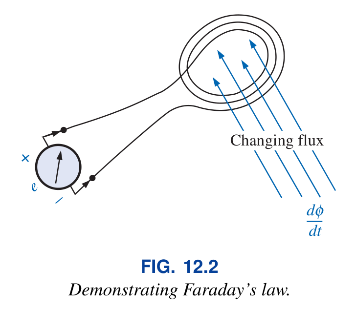
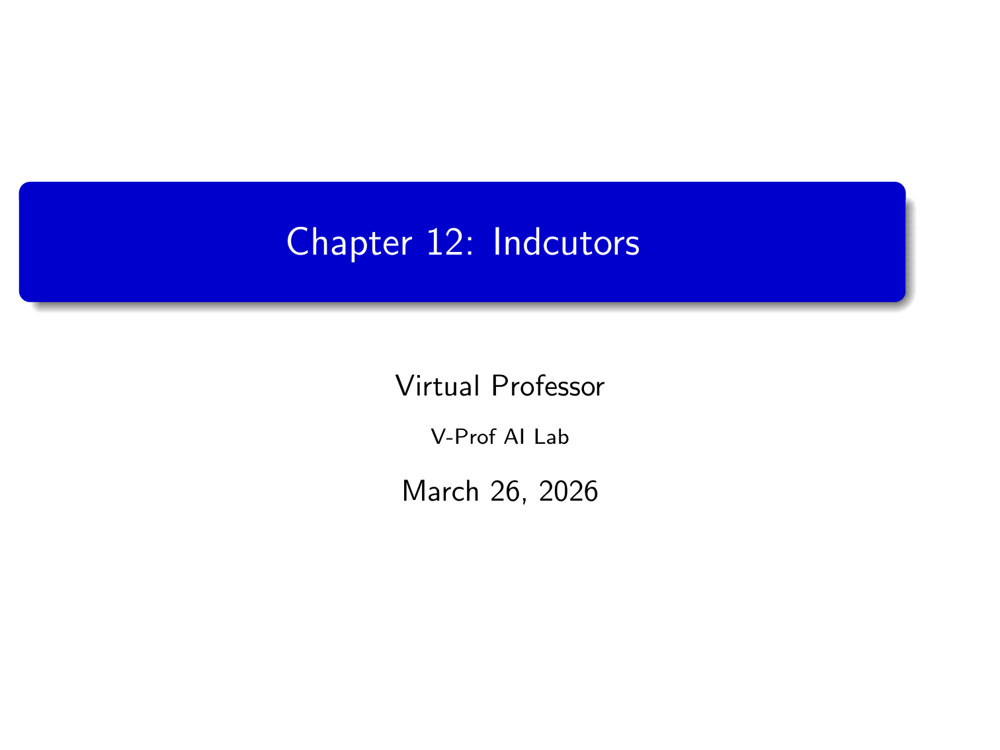
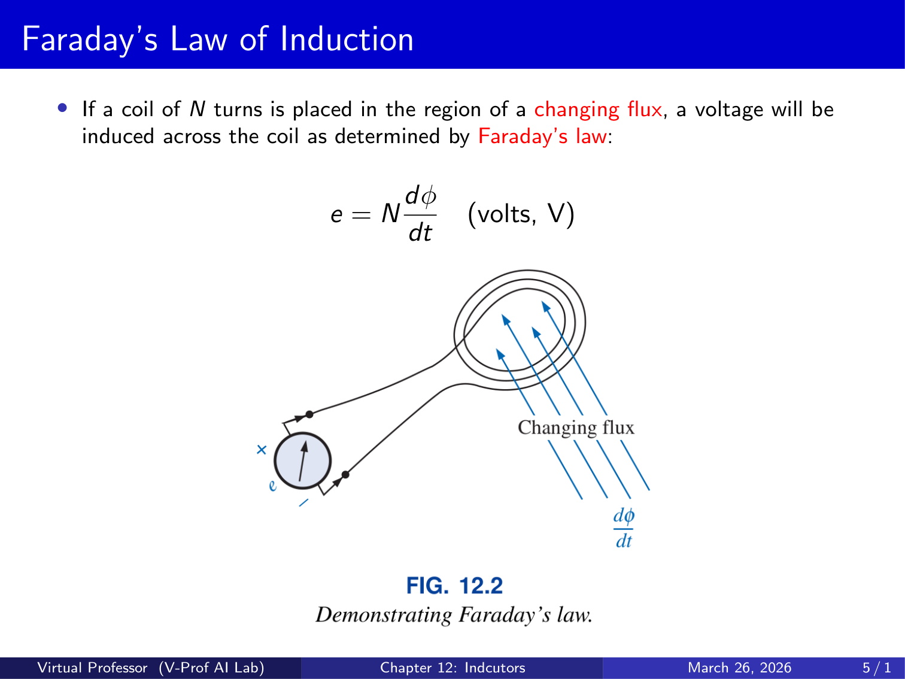

Transforming Academic PDFs
into Professional Video Lectures
Chapter2Video is a fully autonomous pipeline that converts textbook chapters into narrated, slide-based lecture videos — powered by Vision-Language Models, instructional design agents, self-correcting LaTeX, and neural text-to-speech.

Why Chapter2Video?
The "Content-to-Classroom" bottleneck is real: educators spend hundreds of hours manually building slide decks and recording lectures. Chapter2Video eliminates this entirely. Upload a PDF textbook chapter and a table-of-contents index, and the pipeline produces a fully narrated MP4 video with professional Beamer slides — zero human intervention required.
Input
A textbook chapter PDF and a plain-text index.txt describing the section
hierarchy (e.g., "12.1 Faraday's Law", "12.2 Induced EMF").


Output
A full-HD (1080p) narrated MP4 video lecture, a compiled PDF slide deck, and all intermediate JSON artifacts for reproducibility.


Math notation preserved as inline $...$ and display $$...$$ LaTeX
throughout the pipeline.
Specialized agents (Dean, Professor, Coder) collaborate via structured JSON contracts.
LaTeX compilation errors are auto-detected, mapped to frames, and fixed autonomously.
400+ Edge-TTS neural voices synthesize narration with zero API keys or rate limits.
Streamlit Application
A lightweight Streamlit web app lets you upload your PDF and index file, monitor progress across all four pipeline stages in real-time, and preview the generated slides and video directly in the browser.

Four-Stage Pipeline
Each stage is a self-contained module with its own agents, data contracts, and error handling. Stages communicate through structured JSON artifacts, ensuring modularity and reproducibility.
PDF Miner
High-fidelity extraction of structured text & figures using Vision-Language Models
How It Works
Rather than relying on error-prone text-scraping, PDF Miner takes a VLM-first
approach: every page zone is rendered as a high-DPI image and fed to
Gemini 2.5 Pro, which returns LaTeX-formatted transcriptions with full
mathematical notation. This ensures that dense equations like
$I = I_S(e^{V/nV_T} - 1)$ are transcribed exactly as printed.
The extraction follows a five-step pipeline:
Parses index.txt into a section hierarchy. If a parent section
(e.g., "12.2") has no children listed, the engine auto-discovers sub-subsections
("12.2.1", "12.2.2") by scanning PDF text.
Regex-matches section IDs on each page, filtering out Table-of-Contents entries (lines with "..." and page numbers). Falls back to VLM-based OCR when native text search fails on scanned PDFs.
Merges text-block intervals to detect vertical gaps, validating two-column layouts with ≥50 words on each side and a width ratio <3.0. Zones are clipped with 50px margin stripping to exclude headers/footers.
Each zone image is transcribed by Gemini, which returns LaTeX with inline
$...$ and block $$...$$ notation. The VLM understands
2D layouts, sidebars, and multi-column reading order. Each section gets a fresh
VLM instance — no history bleed.
Figures are only extracted if a real PDF visual object (vector or raster) is detected. The VLM provides bounding boxes in normalized [0–1000] coordinates; native PDF objects validate them. Body text above/below is trimmed, background colors replaced with white.
Key Innovations
🔍 Dual-Mode PDF Handling
Detects scanned vs. native PDFs by sampling 6 pages for raster coverage (>80% = scanned). Native PDFs use fast PyMuPDF extraction; scanned PDFs fall back to VLM OCR.
🎯 Colored Box Refinement
Detects figures inside shaded "Example" boxes by sampling corner pixels. The VLM then identifies the tight diagram+caption bbox, excluding surrounding problem text.
🧹 Global Figure Deduplication
Tracks extracted captions across all sections to prevent duplicate figure extraction. Session-state caching survives Streamlit reruns.
📐 Stateless VLM Execution
Each section gets a fresh VLM agent — no context contamination between sections. Cache-backed responses prevent re-processing.
Extraction Samples

Output: Structured Extraction Data
The final output is a structured JSON document where each section is represented as an object containing its hierarchical ID, extracted title, the full LaTeX-transcribed text body, and a list of extracted figures with their file paths, captions, page numbers, and bounding-box coordinates. This preserves the complete section hierarchy of the original textbook, enabling downstream stages to reason about context (e.g., "this section comes after the introduction") and to correctly anchor figures to the concepts they illustrate.
Every mathematical expression is embedded as LaTeX notation within the text body — inline formulas between single dollar signs and display equations between double dollar signs — so that downstream rendering engines (like Beamer) can compile them natively without any lossy conversion step.
Virtual Professor
Pedagogical lesson planning & narration scripting with multi-agent intelligence
How It Works
The V-Prof layer treats video generation as an instructional design problem, not simple summarization. Two specialized agents collaborate: the AllocationAgent ("The Dean") creates a strategic lesson plan, and the OratorAgent ("The Professor") writes extractive slide content plus conversational narration scripts.
The Dean — AllocationAgent
Analyzes each section within the context of the full chapter outline to make informed concept-budgeting decisions.
What It Detects
- Distinct technical concepts (1 slide minimum each)
- Bold/italic vocabulary terms to preserve
- Figure anchoring (each figure → a slide)
- Worked examples ("Solve", "Calculate", "Example")
- Mathematical formulas requiring dedicated slides
Budgeting Rules
- Overview sections → 1 slide
- Standard sections (1–2 concepts) → 2–3 slides
- Dense sections (3–5 concepts) → 4–8 slides
- Very dense (6+ concepts) → 6–12+ slides
- NEVER drop concepts — coverage > brevity
The Professor — OratorAgent
Transforms allocated concepts into polished slide content with two distinct output streams:
📊 Slide Visuals (Extractive)
Exact sentences from the source text. Zero paraphrasing — 100%
extractive to prevent AI hallucination of technical content. LaTeX math preserved
verbatim ($E = mc^2$).
🎙️ Professor Script (Conversational)
YouTube/Computerphile-style narration. Plain text only — "E equals m c squared", not
$E = mc^2$. History-aware to prevent repetition across consecutive
slides.
10 Supported Layout Types
Layout is selected based on content type: equations get
Formula, figure+text gets Mixed_Horizontal or
Mixed_Vertical, and step-by-step solutions get ExampleSolution (4
steps per slide max).
Output: Presentation Blueprint (PPT JSON)
The Virtual Professor's output is a structured presentation blueprint — a JSON file that encodes every slide in the planned lecture. Each slide object carries its concept title, the selected layout type (e.g., BulletPoints, Mixed_Horizontal, Formula), an array of extractive bullet points copied verbatim from the source, an optional figure path, a professor script written in plain conversational English, and a transition sentence that connects to the next slide.
This blueprint acts as a formal data contract between the pedagogical layer and the downstream Slide Builder. Because every field is strictly defined — visuals contain LaTeX while scripts contain spoken-word text — the downstream compiler can process each independently without ambiguity. The separation of concerns also means the same blueprint could be rendered into different output formats (PowerPoint, HTML slides, or Beamer) without any changes to the pedagogical engine.
Anti-Hallucination by Design
A core design principle of the Virtual Professor is its 100% extractive approach to slide content. Rather than asking the LLM to "summarize" or "explain" a concept — which risks hallucinated technical details — the system instructs the OratorAgent to select exact sentences and phrases from the source material. This extractive constraint ensures that every bullet point on a slide is a verbatim quote from the textbook, preserving the precision of mathematical definitions and technical terminology.
The conversational narration script is the only generative output, and it is clearly separated from the visual content. Even in the script, the OratorAgent is constrained to explain concepts rather than introduce new information, and it tracks a rolling history of previous slides to prevent redundancy across consecutive narrations.
Slide Builder
Self-correcting LaTeX Beamer generation with VLM-guided layout optimization
How It Works
The Slide Builder transforms PPT JSON into a compilable .tex file. A specialized
CoderAgent (powered by Gemini 2.5 Pro) generates LaTeX Beamer frames for
each slide. If a slide contains a figure, the system generates two layout variants
(Horizontal and Vertical) and lets a Gemini 3 Pro VLM judge pick the
winner.
Auto-detects missing Title and Table-of-Contents slides. Injects them with VLM-generated narration scripts.
Recursively escapes special characters (&, %,
_, #) while preserving math mode integrity. Figure
paths are exempt — underscores in filenames must remain unescaped.
For figure slides: CoderAgent generates Variant A (Horizontal) and Variant B
(Vertical). Both are compiled to images and placed in a 2×1 comparison grid.
Gemini 3 Pro inspects the grid and returns {"choice": "A"} or
{"choice": "B"}.
pdflatex runs in -nonstopmode. If it fails, the log is
parsed to extract error line numbers, which are mapped to specific frames via
tracked line ranges. The CoderAgent fixes only the broken frame — no collateral
changes.
The compiled PDF is split into per-slide PNG images at 300 DPI using PyMuPDF.
Narration scripts are saved as individual .txt files. A master
ppt_mapping.json links everything.
CoderAgent Design Principles
✂️ No Animations
Strips all \pause, [<+->], and overlay commands.
Every frame is a single static slide — critical for PNG extraction.
📏 Font Scaling
Mandatory scaling: >150-char bullets use \footnotesize.
Mixed_Vertical with 3+ bullets drops to \scriptsize. Prevents overflow.
🎨 Professional Theme
Solid blue header bar, no navigation dots, rounded title boxes, high-contrast typography via Madrid Beamer theme.
🛡️ Footer Safety Zone
Ensures 0.8em empty space before \end{frame}. The VLM judge disqualifies
any variant where content touches the footer bar.
Generated Slides


Video Builder
Bit-perfect audio-visual synchronization with neural text-to-speech
How It Works
The final stage marries visuals with speech. For each slide in the
ppt_mapping.json, the engine reads the script text, generates an MP3 via
Microsoft Edge-TTS neural voices, then creates a MoviePy
ImageClip whose duration is set to exactly the audio clip's duration.
This guarantees zero drift across the entire video.
Reads each scriptN.txt file. Empty scripts are silently skipped
(coverage-first design — partial output over crashes).
Text is sent to Microsoft's Edge Read Aloud API via
edge_tts.Communicate(). The async engine streams MP3 chunks back
and saves the complete audio file. Default voice:
en-US-AndrewNeural.
For each slide: ImageClip(img) →
set_duration(audio.duration) → set_audio(audio) →
resize(height=1080). Duration is measured from the actual MP3 file,
not estimated from text length.
concatenate_videoclips(clips, method="compose") chains all clips
sequentially. FFmpeg encodes the final MP4 with H.264 video and AAC audio at 24
FPS. Compose method handles mixed clip sizes gracefully.
Technical Details
🔄 Cross-Version MoviePy
Dual import path: tries moviepy.editor (v1) then moviepy
(v2). Runtime hasattr detection handles API renames:
set_duration → with_duration, resize →
resized.
⏱️ Timing Precision
Audio duration is a float in seconds (e.g., 12.47s). At 24 FPS, each frame = ~42ms. Sub-frame audio durations are handled by MoviePy's internal audio mixing — imperceptible precision.
🎤 Voice Catalog
400+ neural voices across 100+ locales. Recommended: en-US-AndrewNeural
(professional male), en-US-JennyNeural (friendly female),
en-GB-RyanNeural (academic British).
💰 Free & Unlimited
Edge-TTS requires no API key, no subscription, and has no rate limits for typical lecture workloads. Same neural engine used by Microsoft Edge browser.
Render Specifications
| Parameter | Value | Rationale |
|---|---|---|
| Resolution | 1080p height | Full HD standard for all modern displays |
| Frame Rate | 24 FPS | Standard lecture framerate; sufficient for static slides |
| Video Codec | libx264 (H.264) | Universal compatibility, hardware decode on all platforms |
| Audio Codec | AAC | MP4 standard, transparent quality at lecture bitrates |
| Concatenation | compose | Handles mixed clip sizes; no dimension assumptions |
| Duration | Σ audio durations | No padding, no transitions, no black frames |
Multi-Disciplinary Generation
Chapter2Video handles deeply complex academic material across engineering and computer science. Browse our generated video samples below.
Semiconductors: Part 1
Semiconductors: Part 2
Processing Unit Design
Mutual Exclusion
AC Analysis & Inductors
Signal Modulations
Quick Start
Getting Chapter2Video running requires four main prerequisites. Detailed installation instructions are available in the GitHub repository README.
Download the complete Chapter2Video source code from GitHub, including all agent modules, templates, and the Streamlit application.
The pipeline requires PyMuPDF for PDF processing, Pillow for image manipulation, CAMEL-AI for multi-agent orchestration, Edge-TTS for speech synthesis, and MoviePy for video composition.
The Slide Builder compiles Beamer presentations using pdflatex. A full TeX Live installation is recommended to ensure all required packages (amsmath, graphicx, beamer) are available.
Create a .env file with your Google Gemini API key. The pipeline uses Gemini 2.5 Pro for VLM transcription, concept allocation, and slide generation across all four stages.
Start the web interface to upload your PDF and index file, monitor pipeline progress in real-time, and preview the generated slides and final video.
Repository Will Be Public Soon!
We are finalizing the Chapter2Video source code for public release.
If you need to convert a chapter to a video right now, please send an email with the subject [Chapter2Video Conversion] to our team.